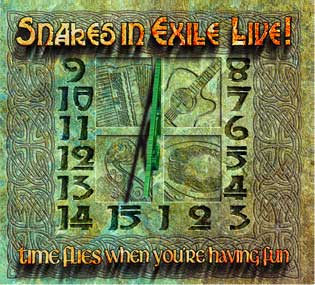

Acoustic, Harmonic & rather Celtic

September 2007. Snakes in Exile celebrate their 15th anniversary with a live-album. Looking back upon 15 years of live-gigs, they selected 16 of their favourite songs in concert that didn’t make it to one of their previous albums because they would only come out at full strength on a live recording. It became a very representative sample of a Snakes-concert. Featuring guest-musicians such as Jokke Schreurs (guitar), Toon van Mierlo (Uillean pipes and Gaita) and Guy Fletcher (master-fiddler from Northampton and part(y)-time Snake in Exile for over 10 years).
TrackList
A Place in the Choir
We went way back in time for this one. It was on our repertoire in the early years. In a new arrangement with percussion, which we didn’t have in those days.
Carrion Crow
Featuring Jakke Teut on whistle. 15 years ago, having the experience, he was a great support for us getting started as a band. He introduced us to the McCalmans by whom we first heard this traditional.
N17
In 1999 The Saw Doctors asked Snakes in Exile on stage to join them for the N17 at the Cambridge Folk Festival. A small step for mankind but a giant leap for us!
Destination Donegal
We learned this song from Chris Strong, front man of Poison the Poteen (the band Guy Fletcher played in when we first met him). Featuring Toon Van Mierlo on uillean pipes.
City of Chicago
Written by Luka Bloom though we first heard this song on an album by his brother Christy Moore on holiday in Ireland in 1993. Jokke Schreurs paints the perfect scenery with his guitar.
Demons and Dragons
Written by Chris Strong (see also Destination Donegal). In the early eighties, Chris worked ‘on the shovel’ in London for this building firm called McNicholas. In the song, he compares the vans that picked them up terribly early in the morning with demons and dragons. Toon on uillean pipes and Guy Fletcher on fiddle.
Ride On
Same cassette as City of Chicago, same holiday. Written by Jimmy McCarthy. One of the most beautiful love-songs ever written to our modest opinion.
Out of the Woods
A song by Sinead Lohan that we first heard on the debut-album of Nickel Creek.
Feel so Near
Of all Dougie Maclean-songs that ever appeared on our repertoire, we chose this one for the live-recording. Listen to the audience singing along and you’ll hear why. Thank you for that!
Mercedes-Benz
Acapella and unison in the original version by Janis Joplin, here build up to a four-part harmony.
The Last Shanty
Our first drummer Gette De Deken still joins us for the special occasions. He plays bodhran on this acapella-shanty. Like in Mercedes Benz, our sound engineer since years Bart Cuyvers completes the four-part harmony.
The Rambling Rover
A song by Silly Wizard, that appeared on Listen to the Heat, a live-CD by The McCalmans. This album was a great inspiration for the early Snakes in Exile. With Toon Van Mierlo on gaita (something like Spanish pipers).
Fox on the Run
We grew up with the version of Manfred Mann. In our early days as a folk-band, we heard a blue grass version of the same song during a jam-session with a local band called Sweet OK. We sort of combined these two to our own interpretation.
The Fox
We learned this song from Nickel Creek who play an ultimate version that makes all other versions unneeded. We did it anyway as a tribute to Jakke who lost all his chickens a few years ago. Little comforting maybe is the thought that he helped to raise a family of foxes in his area that way. John John, the great goose is gone, the fox is on the town-oh!
The Weight
Jokke Schreurs pointed out one condition before he agreed to play along on our album: let him play on The Weight. It’s a classic by The Band and one of our all time favourites in gigs because of the sometimes deafeningly loud choir in the audience.
Tunes + The Fiddler's Tail
Guy Fletcher first joined us on stage during a gig in a pub ‘The Two Brewers’ in Luton (UK). Spontaneously and unrehearsed. During the break, Peter showed him the riff of ‘The Fiddler’s Tail’, a song we played together in the second half. We then decided that Guy would fly over to record it with us for our album ‘Second Skin’. This is nearly 10 years ago now and we hope in 10 years time we’ll still find ourselves playing together at least a few times a year.